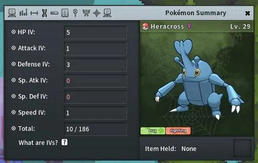

O que são Ev's e Iv's?
Ev's
Nas batalhas de Pokémon, além de ganhar pontos de experiência, também
se obtêm Ev's (Effort Values), dependendo do Pokémon Derrotado. Um
Pokémon pode ter até 510 Pontos de EV, comumente usada a divisão
(252/252/6) A cada 4 Pontos de EV tem-se 1 Ponto de Stat. Cada Pokémon
Derrotado fornece EVs em uma ou mais estatísticas. Geralmente, isso
está relacionado à estatística mais forte e ao Estágio do Pokémon -
por exemplo, se você derrotar um
 Geodude, seu Pokémon receberá um EV na estatística de Defesa. Se você
derrotar um
Geodude, seu Pokémon receberá um EV na estatística de Defesa. Se você
derrotar um
 Gengar, você obterá três EVs em Ataque Especial. Ovos recém-chocados e
Pokémon capturados na natureza - independentemente do nível - não
possuem EVs. Se você deseja maximizar uma estatística específica, é
útil obter 252 EVs (63 pontos). Os últimos 3 EVs seriam desperdiçados.
Gengar, você obterá três EVs em Ataque Especial. Ovos recém-chocados e
Pokémon capturados na natureza - independentemente do nível - não
possuem EVs. Se você deseja maximizar uma estatística específica, é
útil obter 252 EVs (63 pontos). Os últimos 3 EVs seriam desperdiçados.
Para ver a lista de EV's que ganha ao derrotar cada Pokémon, Clique Aqui
Iv's
Os IV's (Individual Value) desempenham um papel fundamental na determinação das estatísticas do seu Pokémon. Os IVs são atribuídos aleatoriamente quando você encontra um Pokémon selvagem, o recebe como presente ou o obtém de um ovo. Uma vez que você capturou um Pokémon, não é possível alterar os IV's.
Cada Stat do Pokémon (HP, Atk, Def, Sp.Atk, Sp.Def, Speed) possui seu próprio IV, variando o valor de 0 a 31. Cada Ponto de IV equivale a 1 ponto no Stat.